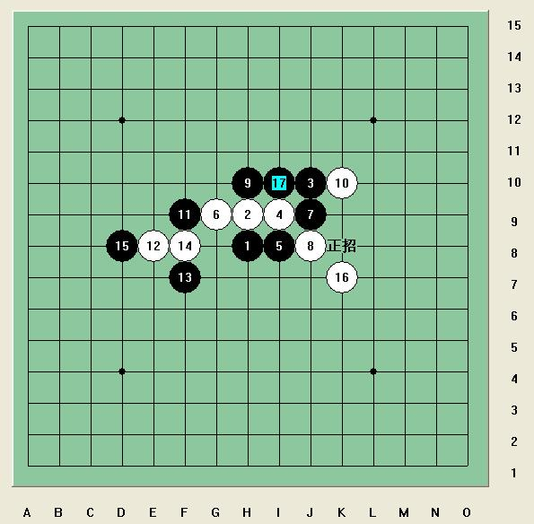

小棋后疏星17手名骗破解版（家族赛）.rar
小棋后疏星17手名骗破解版（家族赛）.rar这个名骗出现在裁决和踏雪选手比赛的棋局中，详情参考这两个帖子ShowPost.asp?ThreadID=6047和ShowPost.asp?ThreadID=6062
不得不佩服五子棋的神奇，真是一子错，满盘皆罗索。

这种微小差异如果是实战第一次碰到还真是难以一下算清楚，所以还是有研究点的好，对一些有趣局面当谨记在心。
［ 逆刃 于 2009-3-30 22:28:29 时奖励此帖[金币加 20 威望加1］
看到这两个图了吗，这两手最后的差异就是这个地方，小棋后我是佩服的五体投地了，要计算到这么多手后的这种情况，那是什么样的高人呢？
哈哈，这个正招20利用了后中先和长连禁手，难怪这么猛！！！后中先的威力请参考这个帖子ShowPost.asp?ThreadID=5294
［ 茗弈小刀 于 2009-3-31 10:16:25 时奖励此帖[金币加 20 威望加1］
［此帖子已被 茗弈小刀 在 2009-4-22 19:23:45 编辑过］

感觉你这个谱有很大的问题，你的第一个图片上写的是“正招”，而你的谱上写的是“中招”请问，正招和中招有什么区别吗？有图为鉴：
小丸说的对，第一个谱上的确写的是中招，那是风铃提醒的，当时比较匆忙，想来风铃这么说必有其道理，就想把这个骗找出来，那时还没找到这个骗的杀法，所以，，，，
正招就是正确的应对方法，中招就是你走这步后，下面有一个大陷阱在等着你，或你在这步后就彻底进入黑洞了。
写得太好了，喵
引用：你们能不能不随便给人改名啊，我是小丸，你们可以叫我小丸，也可以叫我丸子，也可以喊我小子，但是请你们不要喊我小丸子好不好。
原文由 岳麓小棋后 发表于 2009-3-31 9:46:19 :小丸子说的对，第一个谱上的确写的是中招，那是风铃提醒的，当时比较匆忙，想来风铃这么说必有其道理，就想把这个骗找出来，那时还没找到这个骗的杀法，所以，，，，
正招就是正确的应对方法，中招就是你走这步后，下面有一个大陷阱在等着你，或你在这步后就彻底进入黑洞了。
 不好意思，我是用智能ABC打的，打丸的的时候怕找的慢，就打了丸子的拼音，想不到冒犯你了，再说子是对人的敬称，我没有改你的名字呀，孔丘世称孔子，孟轲人称孟子
不好意思，我是用智能ABC打的，打丸的的时候怕找的慢，就打了丸子的拼音，想不到冒犯你了，再说子是对人的敬称，我没有改你的名字呀，孔丘世称孔子，孟轲人称孟子很强大妹妹这个研究！